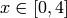
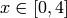
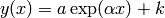
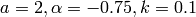

Simple fitting¶
Test different methods of fitting using a signal with known source.
Generate data pairs
 in the range  from the
target function:
in the range  from the
target function:
Using the following choice of constants: .
Add zero-mean gaussian noise to
 , with amplitude to create
a noisy version of the signal.
, with amplitude to create
a noisy version of the signal.Fit the noisy data using the following methods: least-square fit to the analytical form, splines (from scipy.interpolate), polynomial fit (from numpy) of orders 0, 1 and 2.
Plot the data and the results from the fitting procedures and Compare graphically the fitting methods.